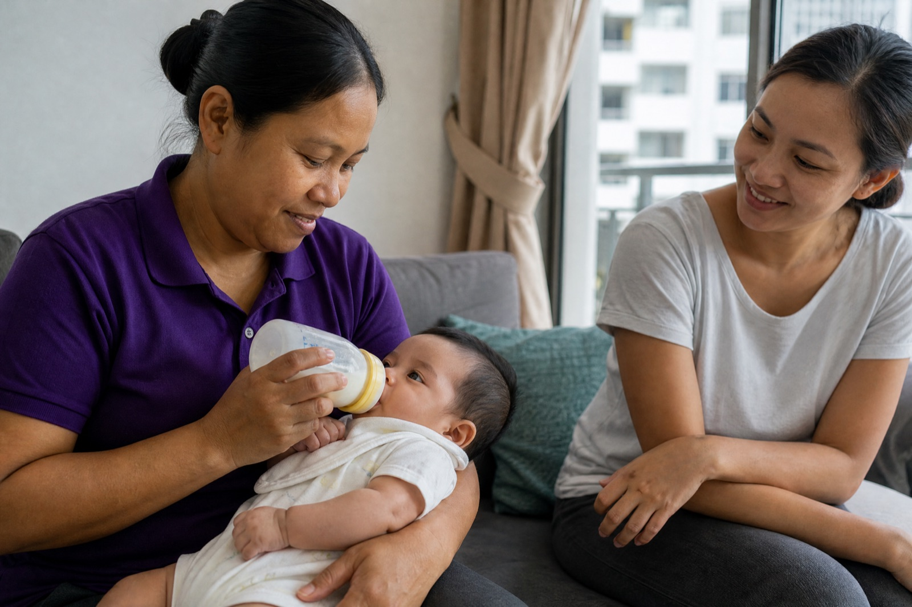

Infant care
Care for mummy and baby, before and after birth.
A confinement nanny is around for a month. A trained helper stays on, at a reasonable rate, and some of ours also prepare confinement and milk-boosting meals.
- Baby-care experience plus extra training
- Confinement and milk-boosting meals, on request
- Support for mother and baby beyond the first month